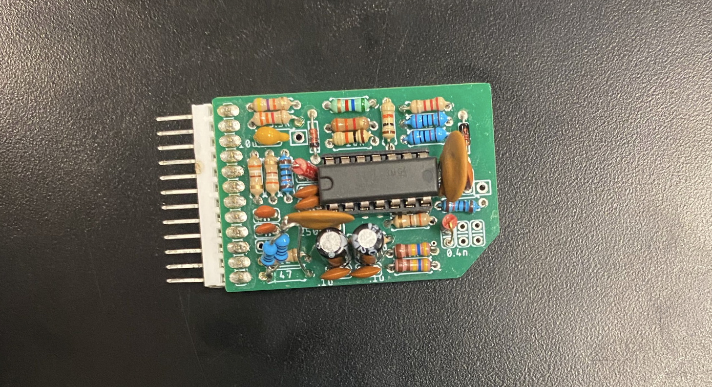
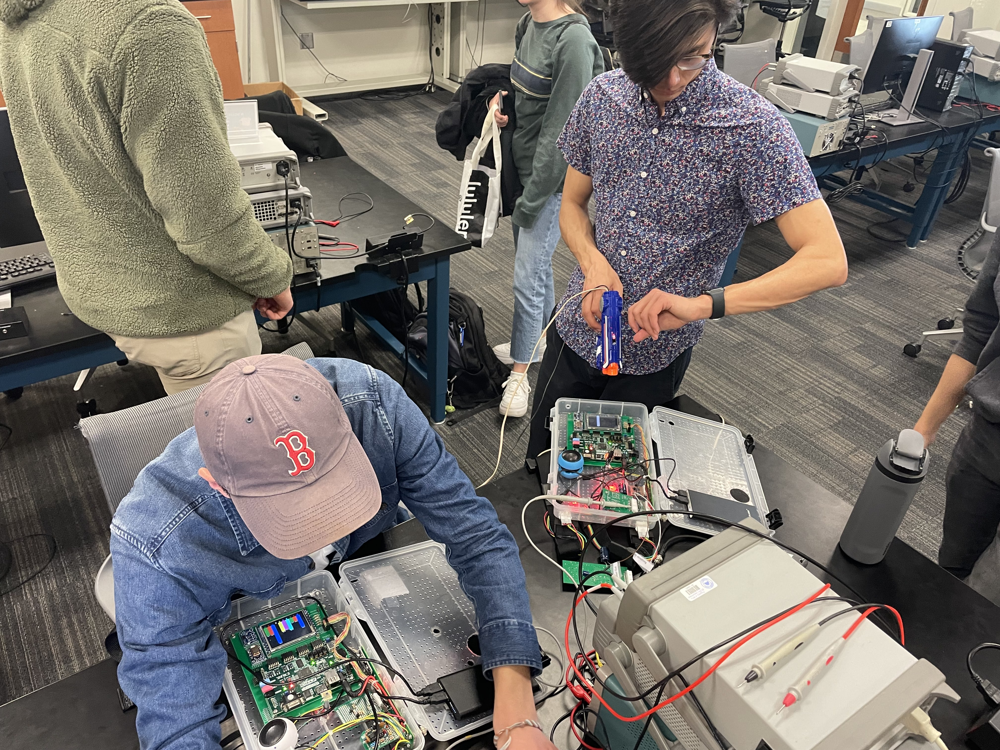

Laser Tag
Designed the PCB for an amplifier and bandpass filter that filters all signals outside of 1 kHz and 5kHz and amplifies a 4µV siganl to 70 mV.
HardwareUsing photodiode sensors, we were able to detect and amplify signals from a red LED at specific frequencies up to 60ft away.
In order to develop this hardware I used LTSpice, Eagle, and order the PCB's through JLCPCB
 On the left are the receiver boards that we designed, ordered and soldered ourselves.

On the right is me trouble shooting and debugging firmware issues and amplification issues with my project partner
Firmware
Wrote firmware to digitally filter the signal, register red LED shots to be oscilate at certain frequencies, and to determine which frequency was received in order to determine which player shot you.
Future Iterations/Improvements
Future iterations of this project might include a simplification of the hardware and technology stack in order to do the processing on a simple microcontroller instead of the complex Xylinx boards that we were using at the time.
Youtube link: Submission video
Project Specs: ECEN 3330 Laser Tag Project